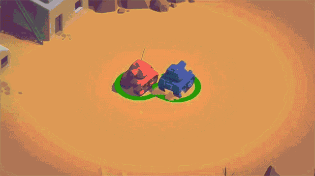

【学习笔记】Unity3D官方游戏教程：Tanks Tutorial

一、前言
不总结就没有进步，不写代码就不能理解，不理解那么知识就不属于你啊！这是我以前学习的时候很容易出现的误区，为了克服这点，秉承认真学习天天向上的精神，我坚持花时间来整理自己学习所得，一供自己备忘查阅用，二给自己和大家一起相互交流学习的机会。 :laughing:
继续上次 Survival Shooter 游戏学习总结之后，这次是官方的另一个游戏教程： Tanks tutorial ，坦克大战，蛮有趣的一个多人游戏，看完教程后还是自己动手写代码，刚开始有很多地方不明白不理解，后面慢慢参悟出来了，一定程度上还是提高了自己一点点水平，于是，特作此文，以表总结！ :grin:
二、知识点
- OnEnable 和 OnDisable 函数的使用
- 世界坐标下 UI Slider 的使用
- 音频混合效果输出 Audio Mixer
- 循环游戏机制 GameLoop 探索
- 局部坐标和世界坐标转换
- 摄像机宽高比 aspect 和屏幕宽高比
1. OnEnable 和 OnDisable 函数的使用
一般使用 GameObject 之前我是在 Awake() 或者 Start() 函数中做一些初始化，最后配合 Destroy() 函数进行销毁，这次学习了 OnEnable() 和 OnDisable() 函数的使用，在很多场合更加方便！有时候我们的物体并不需要销毁再生产，而是先“隐身”再初始化“现身”，这个时候调用 GameObject.SetActive(false) 后物体是不会显示的，相应的 Unity 会自动调 OnDisable() 函数，而启用游戏物体的时候相应的调用 OnEnable() 函数，你在函数里写初始化代码就可以了。
所以不需要销毁游戏物体就能达到这种效果，记得同时禁用 GameObject 上的其它组件，比如已经死亡的坦克不能：射击、运动等。这，只是一个简单的知识点。 :grin:
2. 世界坐标下 UI Slider 的使用
同样，非常简单的知识点，只是作为新手从来没用过而已，只需要在 Canvas 的 Render Mode 中更改设置 Screen Space - Overlay 为 World Space 就可以把 UI 元素放到我们的游戏物体之下了，达到的目的是能让 UI 元素跟随游戏物体运动，应用场景比如：玩家的生命血条等。 So easy! :grin:
3. 音频混合效果输出 Audio Mixer
想象一下这种场景：一个游戏中充杂着各种各样的音频音效，比如同时有背景音乐、坦克行走声音、坦克引擎声响、炮弹炮炸声等等，这个时候是不是完全不能分辨哪个音效在发挥作用了？没有了主次之分？非常混乱。解决的办法就是采用 Audio Mixer 音频效果混合输出工具对混音进行配置。
如何设置 Audio Mixer ，听上去高大上，其实并不复杂。一篇简单的文章介绍你就能了解并使用上它： Unity 5 音效二 AudioMixer
大家可以尝试使用，参考一下我这张图，就一目了然了：

4. 循环游戏机制 GameLoop 的探索
这是我从这个游戏中学到的一个非常实用且经典的游戏循环控制方式，简单而又强大。
使用场景是这样的，大家可以参考拳皇的入场式：开始游戏，显示 Round 1 第一回合，静等 3 秒钟，然后玩家开始游戏，玩家 A 胜利，玩家全部失去焦点，游戏结束显示 Player A Wins ，静等 3 秒钟，接着进入下一场，如此循环…… 这是一个循环模式，如果采用普通代码写出来在逻辑上会比较麻烦，使用 C# 中的 yet return 配合 IEnumerator 能够完美实现相关逻辑和代码，伪代码如下，一看就知道怎么使用了：
1 | private void Awake() { |
5. 局部坐标系和摄像机宽高比、屏幕宽高比
这是我从 Tanks 这个游戏中学到的最有用的知识点之一！非常重要的知识点，也花费了我不少时间，我在上一篇博客中就关于 Unity 中的坐标体系做了一个小小的总结，大家有兴趣的可以去看看：理解Unity3D中的四种坐标体系。

有时候游戏中我们的摄像机并不是直接作为最上层的物体出现在场景中，想象一下这个场景，我们的摄像机在不旋转的情况下，把摄像机置于一个空物体 parentObject 中作为子物体，那么只要这个父物体旋转了，摄像机视野也就跟着旋转了，这样的话摄像机的本地局部坐标是没有任何旋转的，在局部坐标系下进行处理非常简单。
这样做有什么用呢？我可以说非常有用，比如：坦克大战中，这个摄像机需要同时把所有坦克玩家置于视野当中，那么就需要根据当前坦克的位置来移动并放大或者缩小相机的视野范围。那么如何在此摄像机的父物体局部坐标系下进行处理呢？第一步，移动摄像机到场景中所有需要显示的物体的中心位置处；第二步，根据我们摄像机的宽高比（ camera.aspect ）来计算场景的尺寸（ size ），关于宽高比在我上一篇文章中有介绍，大家可以参考参考；最后，把计算出来的尺寸设置为相机的视口尺寸（ camera.orthographicSize ），这样摄像机就能在场景中心位置看到所有游戏物体了，效果如下图：

伪代码如下：
1 | /* |
最后推荐两个函数用于缓冲或者平滑过渡位置的变化：Vector3.SmoothDamp 和 Mathf.SmoothDamp ，大家可以查看文档看一下它的使用，非常简单实用。 :grimacing:
三、总结
通过官方的视频学习到的东西还真不少，路漫漫其修远兮，吾将上下而求索！学无止境啊。希望能和大家一同进步！有什么疑问给我留言吧，哈哈。 :grin:
资料：
理解Unity3D中的四种坐标体系： http://liuqingwen.me/2017/07/31/understanding-coordinate-system-in-unity3d/
Unity 5 音效二 AudioMixer ： http://blog.csdn.net/LIQIANGEASTSUN/article/details/47702483
Tanks tutorial (Unity3D) ： https://unity3d.com/learn/tutorials/projects/tanks-tutorial